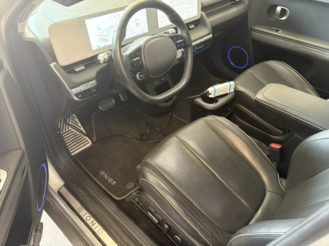
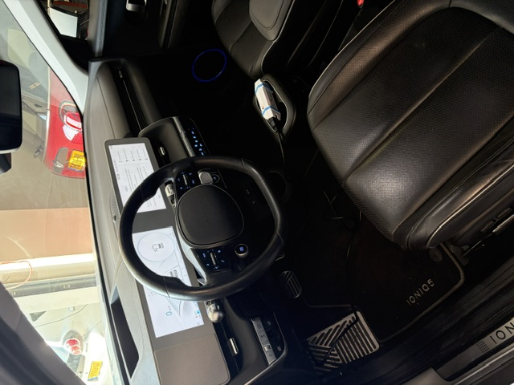
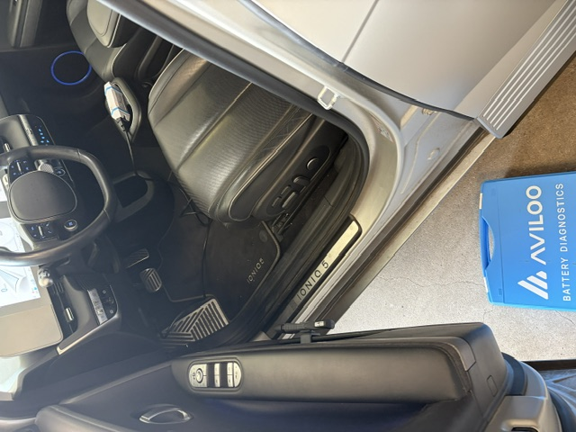
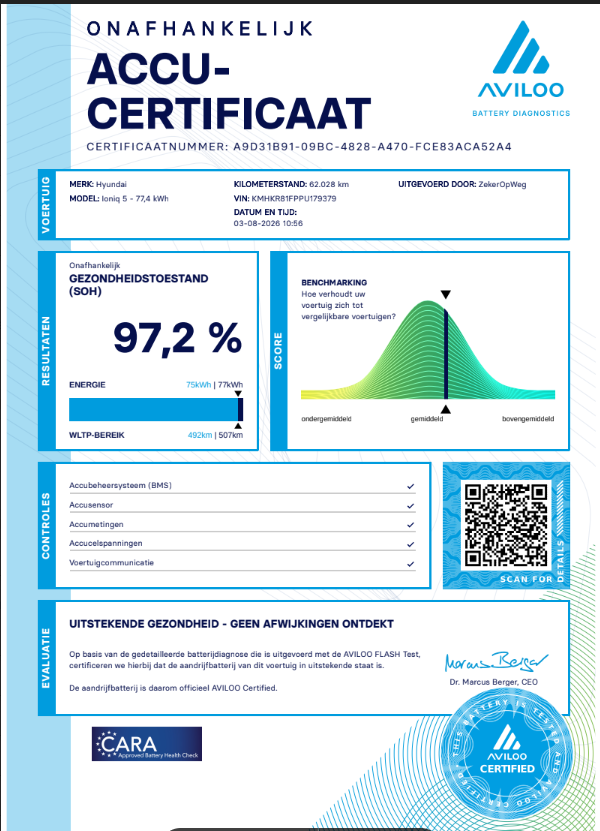

De koper kon zelf niet bij de auto aanwezig zijn. ZekerOpWeg bezocht daarom namens hem de verkoper in Woerden en voerde een onafhankelijke AVILOO batterijdiagnose uit.
★★★★★ TUV-gecertificeerd · 15 tot 20 minuten · Op locatie bij de auto
De koper had een Hyundai Ioniq 5 met 77,4 kWh batterij gevonden bij een verkoper in Woerden. De auto zag er goed uit en de prijs leek in orde. Maar één ding bleef onbekend: hoe stond het er echt voor met de batterij?
De batterij is het kostbaarste onderdeel van een elektrische auto. Schade, ongelijke celspanningen of verborgen degradatie zijn van buiten niet zichtbaar en niet door de verkoper te beoordelen. De koper wilde vóór aankoop zekerheid, niet daarna.
Bovendien kon hij niet zelf naar Woerden reizen om de auto te bekijken. Hij nam contact op met ZekerOpWeg en vroeg of de AccuCheck ook namens hem kon worden uitgevoerd. Dat kon.
Dit herken je misschien: je hebt een geschikte EV gevonden maar de auto staat ver weg, je hebt weinig technische kennis, of je wilt gewoon niet uitsluitend afgaan op de woorden van de verkoper. Een onafhankelijke meting geeft je objectieve informatie voordat je definitief beslist.
De koper hoefde nergens bij aanwezig te zijn. ZekerOpWeg nam de volledige uitvoering op zich.
Bespreking van de situatie, het type auto en de gewenste informatie. Wat wil de koper weten, en waarom?
ZekerOpWeg maakte een afspraak met de verkoper in Woerden voor de meting op locatie bij de auto.
Pepijn Westhoff reisde af naar de verkoper. De koper hoefde zelf niet aanwezig te zijn.
De AVILOO Box werd aangesloten op de OBD-poort van de Ioniq 5. In 15 tot 20 minuten werden alle batterijdata op celniveau uitgelezen en geanalyseerd.
AVILOO analyseerde alle meetwaarden: celspanningen, temperatuurverdeling, batterijmanagementsysteem, voertuigcommunicatie en de uiteindelijke SoH.
De uitkomst en het officiële AVILOO-certificaat werden dezelfde dag teruggekoppeld aan de koper, inclusief een helder aankoopadvies op basis van de meetresultaten.
Onderstaande foto's zijn gemaakt tijdens de AccuCheck op locatie in Woerden op 3 augustus 2026.



Na analyse van alle batterijdata leverde de AVILOO Flash Test het volgende resultaat op:
SoH staat voor State of Health: de gemeten batterijgezondheid ten opzichte van de toestand waarop het systeem zich baseert. Het is een van de belangrijkste meetwaarden bij de beoordeling van een gebruikte EV-accu.
Bij 97,2% SoH is de gemeten bruikbare accucapaciteit van deze Ioniq 5 nagenoeg gelijk aan de referentiewaarde. Dat is voor 62.028 km een uitstekende uitkomst.
Ter vergelijking: de ADAC-norm voor elektrische auto's tussen 50.000 en 100.000 km is 88% SoH. Deze Ioniq 5 scoort met 97,2% ruim daarboven. Hyundai hanteert een garantiegrens van 70% SoH gedurende 8 jaar of 160.000 km. Ook daar zit deze auto ver boven.
Belangrijk om te weten: de SoH is één van de meetwaarden uit de analyse. Een volledige beoordeling kijkt ook naar celspanningen, temperatuurverdeling en voertuigcommunicatie. Dat is precies wat de AVILOO Flash Test doet.
Het percentage dat het dashboard of de boordcomputer van een elektrische auto toont, is bovendien géén betrouwbare maatstaf voor de werkelijke batterijconditie. Die dashboardwaarde is afhankelijk van rijstijl, temperatuur en laadgewoonten en kan afwijken van de gemeten SoH op celniveau.
De AVILOO Flash Test analyseert niet alleen de State of Health. Alle onderdelen van het batterijsysteem worden gecontroleerd en beoordeeld.
| Controle | Gemeten waarde / uitkomst |
|---|---|
| State of Health (SoH) | 97,2%, uitstekend |
| Batterijmanagementsysteem (BMS) | Geen afwijking gedetecteerd |
| BMS-gerapporteerde SoH | 100% |
| Accusensoren | Controles doorstaan |
| Celspanningen | 3,880 V per cel, volledig gelijkmatig |
| Verschil celspanning (min/max) | 0 mV |
| Pakketspanning | 748,1 V |
| Accutemperatuur | 25 tot 27 °C |
| Temperatuurverschil | 2 °C |
| Laadstatus tijdens meting (SoC) | 69% |
| Voertuigcommunicatie | Correct |
| AVILOO-evaluatie | Uitstekende gezondheid |
Meting uitgevoerd door ZekerOpWeg op 3 augustus 2026 te Woerden. TUV-gecertificeerd via AVILOO Flash Test.
0 mV verschil tussen celspanningen is een uitstekende indicatie. Bij goed gezonde accu's zijn de celspanningen vrijwel gelijk. Grote verschillen kunnen wijzen op verouderde of beschadigde cellen. Bij deze Ioniq 5 waren alle cellen volledig gelijkmatig.
Na afloop van de meting wordt een officieel AVILOO-accucertificaat afgegeven. Dit is een TUV-gecertificeerd document met de meetresultaten, geldig als bewijsstuk bij een garantieclaim bij de fabrikant.

Weergave van de meetresultaten uit het AVILOO-rapport. VIN en certificaatnummer zijn niet zichtbaar gemaakt op de openbare website.
Laat de batterij onderzoeken voordat u definitief beslist. ZekerOpWeg voert de AccuCheck op locatie uit, ook wanneer u zelf niet bij de auto aanwezig kunt zijn.
Een verkoper of autobedrijf heeft een commercieel belang bij de verkoop van de auto. Dat hoeft geen probleem te zijn, maar het betekent wel dat hun informatie vanuit een ander perspectief komt dan die van een onafhankelijke specialist.
Een betrouwbaar autobedrijf en een onafhankelijke controle sluiten elkaar overigens niet uit. Ze kunnen elkaar juist versterken. De AccuCheck geeft de koper extra objectieve informatie vóór de definitieve beslissing, ongeacht de kwaliteit van de verkoper.
"Pepijn heeft mij snel geholpen met een accutest als check bij aankoop van een gebruikte elektrische auto. Altijd doen, een onafhankelijk advies met de status van de batterij. Pepijn is helder in de communicatie en is in mijn geval zelf naar de garage gegaan waar de auto stond. Ik hoefde daarbij niet aanwezig te zijn. Kortom, van harte aanbevolen!"Marcel den Hartog Google-review na de AccuCheck · 5 van 5 sterren
Deze case laat zien dat een onafhankelijke AccuCheck ook mogelijk is wanneer de koper zelf niet bij de auto aanwezig kan zijn.
Onafhankelijk inzicht in de batterijconditie vóór aankoop, zonder aanwezig te hoeven zijn bij de meting
Bevestiging dat de batterij van deze Ioniq 5 in uitstekende gezondheid verkeerde: 97,2% SoH
Duidelijkheid over alle gemeten batterijwaarden: celspanningen, temperaturen, BMS en voertuigcommunicatie
Een officieel TUV-gecertificeerd AVILOO-accucertificaat, geldig bij een garantieclaim
Meer zekerheid bij de aankoopbeslissing, gebaseerd op feiten in plaats van de verkoopadvertentie
Persoonlijke terugkoppeling van Pepijn Westhoff, met helder aankoopadvies op basis van de meetresultaten
Deze service is zinvol in veel situaties. Herkent u één van de volgende?
U heeft een gebruikte EV gevonden en wilt vóór aankoop inzicht in de batterijconditie
De auto staat ver van uw woonplaats en u kunt niet zelf bij de bezichtiging zijn
U wilt niet uitsluitend vertrouwen op de verkoper of de informatie in de advertentie
U heeft beperkte technische kennis en wilt een begrijpelijke, eerlijke beoordeling
De fabrieksgarantie loopt binnenkort af en u wilt de accustaat vastgelegd hebben
U wilt het meetrapport gebruiken als onderbouwing tijdens de onderhandeling over de prijs
U koopt een Ioniq 5, Ioniq 6, EV6, Model 3 of een ander ondersteund elektrisch model
U neemt een zakelijke leaseretour over en wilt weten hoe intensief de accu is gebruikt
Bekijk ook de onafhankelijke EV AccuCheck of lees meer over aankoopadvies bij een gebruikte elektrische auto.
Ja, 97,2% is een uitstekende uitkomst voor een Ioniq 5 met 62.028 km. De ADAC-norm voor 50.000 tot 100.000 km is 88% SoH. Deze auto scoort ruim daarboven. Hyundai hanteert een garantiegrens van 70% SoH gedurende 8 jaar of 160.000 km. Ook daar zit deze auto ver boven.
ZekerOpWeg gebruikt de AVILOO Flash Test: een TUV-gecertificeerde meting op celniveau. De AVILOO Box wordt aangesloten op de OBD-poort van de auto. In 15 tot 20 minuten worden batterijmanagementsysteem, celspanningen, temperaturen, sensoren en voertuigcommunicatie geanalyseerd. Er is geen demontage nodig.
De AVILOO Flash Test meet de State of Health op celniveau. Dit is de werkelijke, meetbare batterijcapaciteit ten opzichte van de referentietoestand. Naast de SoH worden ook celspanningen, temperatuurverdeling, voertuigcommunicatie en het batterijmanagementsysteem geanalyseerd. De test ondersteunt 95% van alle EV- en hybride voertuigen.
Ja. ZekerOpWeg regelt de afspraak met de verkoper en voert de AccuCheck op locatie uit. U hoeft zelf niet bij de auto aanwezig te zijn. De bevindingen en het certificaat worden dezelfde dag teruggekoppeld. Precies zoals bij deze Ioniq 5 in Woerden.
Ja. ZekerOpWeg bezoekt de locatie waar de auto staat. Dat kan bij een particuliere verkoper, een autobedrijf of een dealer zijn. De meting vindt altijd op locatie bij de auto plaats, ook als u zelf niet aanwezig bent.
De AVILOO Flash Test duurt 15 tot 20 minuten op locatie bij de auto. Er is geen demontage, geen ingreep in het voertuig en geen nacht staan nodig.
Een AVILOO Flash Test op locatie kost €129 inclusief BTW. Rijdt u zelf naar Barendrecht, dan geldt €95. Het AccuZeker Pakket kost €228 en bevat naast de AccuCheck ook lakdiktemeting, bandenprofiel, optische en technische controle, onderhoudshistorie en 12 maanden AVILOO Batterijgarantie tot maximaal €3.000.
Nee. Naast de State of Health worden ook het batterijmanagementsysteem, alle accusensoren, celspanningen, pakketspanning, temperatuurverdeling, laadstatus en voertuigcommunicatie geanalyseerd. De AVILOO Flash Test geeft een volledig beeld van de accustaat.
Nee. De dashboardweergave is afhankelijk van rijstijl, temperatuur en laadgewoonten en is geen betrouwbare maatstaf voor de werkelijke batterijconditie. De AVILOO Flash Test meet de SoH op celniveau, onafhankelijk van de dashboardweergave.
Ja. Na de AVILOO Flash Test ontvangt u een TUV-gecertificeerd accucertificaat met alle meetresultaten. Dit document is geldig als bewijsstuk bij een garantieclaim bij Hyundai of een andere fabrikant.
Ja. Het AVILOO-certificaat geeft u objectieve informatie over de batterijconditie vóór de definitieve aankoop. U kunt dit ook inzetten als onderbouwing bij een onderhandeling over de prijs.
Ja. De AVILOO Flash Test ondersteunt 95% van alle EV- en hybride voertuigen. Bekijk ook de specifieke pagina's voor de Ioniq 6, Kia EV6, Tesla, Volkswagen ID en meer.
Nee. Een AccuCheck is gericht op de batterijdiagnose. Een volledige aankoopkeuring omvat ook onderstelcontrole, remmen, carrosserie en uitgebreidere voertuiginspectie. ZekerOpWeg biedt ook aankoopadvies aan waarbij meer aspecten worden beoordeeld.
Wanneer de AVILOO Flash Test afwijkingen aantoont, worden deze helder teruggekoppeld met uitleg over de betekenis. U beslist zelf of u de auto wilt kopen, verder wilt onderhandelen of wilt afzien van de aankoop. ZekerOpWeg geeft onafhankelijk advies, niet namens de verkoper.
Ja. ZekerOpWeg biedt naast de AccuCheck ook aankoopadvies en volledige aankoopbegeleiding. Neem contact op via info@zekeropweg.nu of bel/app naar 06 23 45 23 49 voor de mogelijkheden.
De batterij is het kostbaarste onderdeel van een elektrische auto. Met een onafhankelijke AccuCheck krijgt u vooraf inzicht in de gemeten conditie, zonder uitsluitend te vertrouwen op de verkoopadvertentie.
De auto mag bij een autobedrijf, handelaar of particuliere verkoper staan.
info@zekeropweg.nu · Tel/WhatsApp 06 23 45 23 49